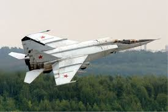
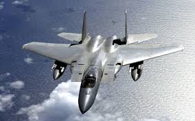

| 服役 | 雷達 | 發動機 | 火箭及炸彈 | 首飛 | 空對空 |
|---|---|---|---|---|---|
| 1972年> | Smertch-A相位陣列雷達米格-25P/RP-25（Saphir一25）雷達（PD型） | 2×R-15BD-300渦噴發動機 | 俄制常規通用炸彈火箭 | 1964年3月（偵察原型機E-155R-1）和9月（截擊原型機E-155P-1） | 紅外和雷達導引空對空飛彈R-40T/-40R各2枚（米格-25P）/R-40T和R-60短程空對空飛彈各兩枚（PD型） |